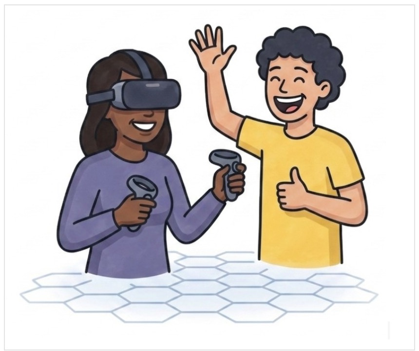
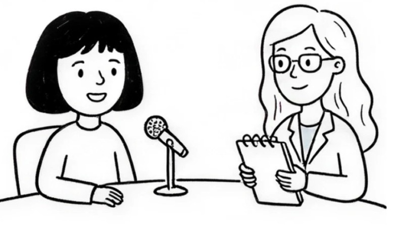
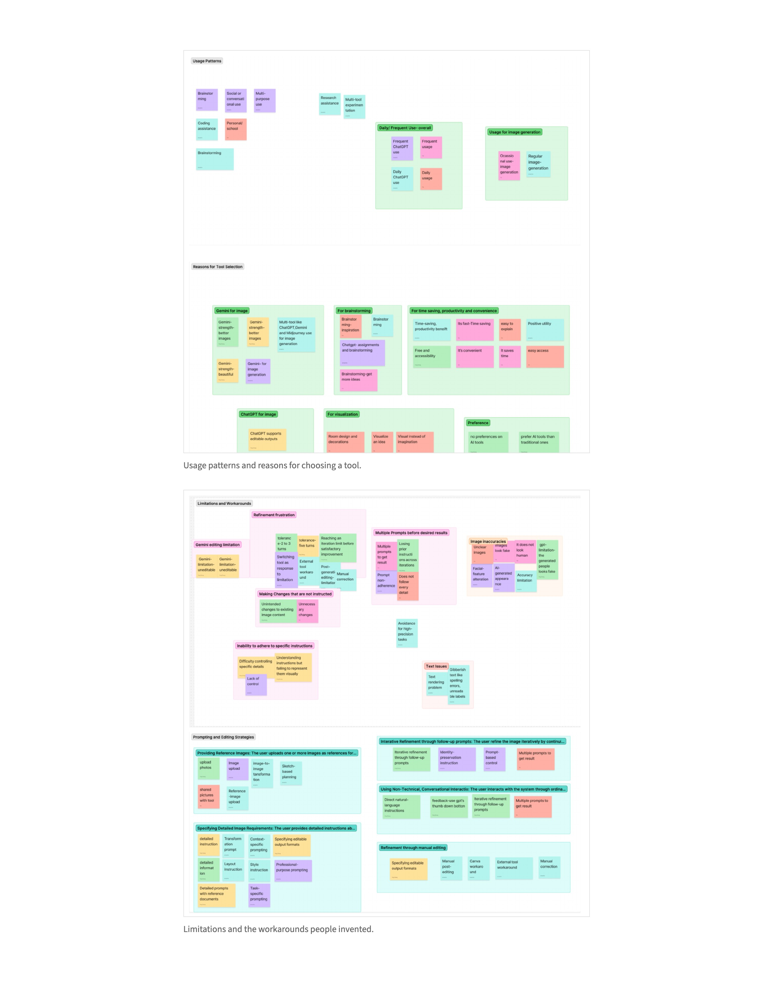
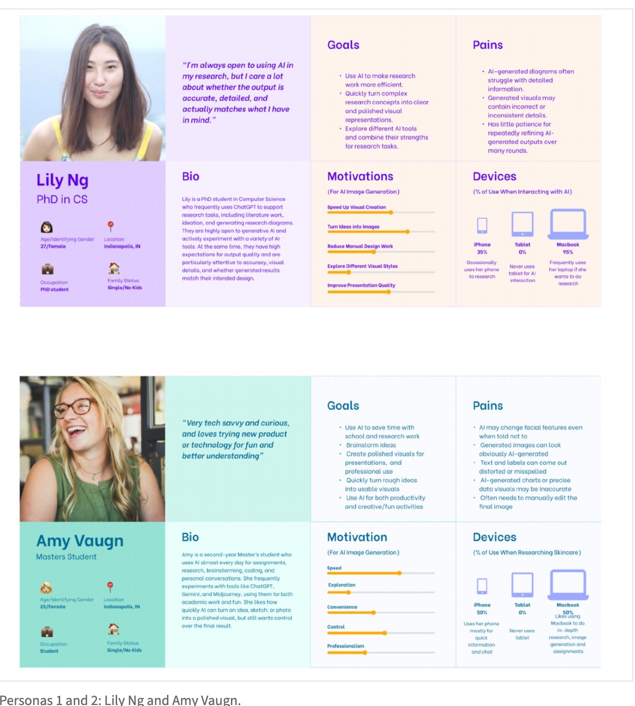
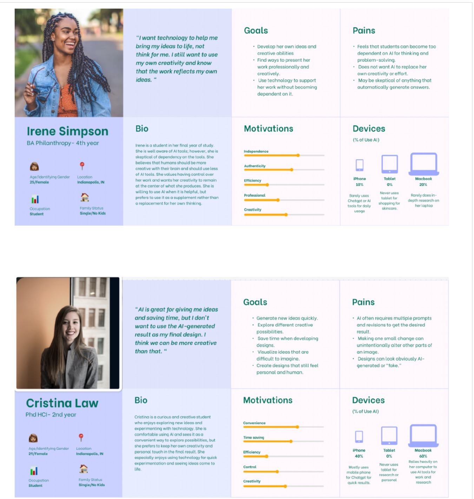
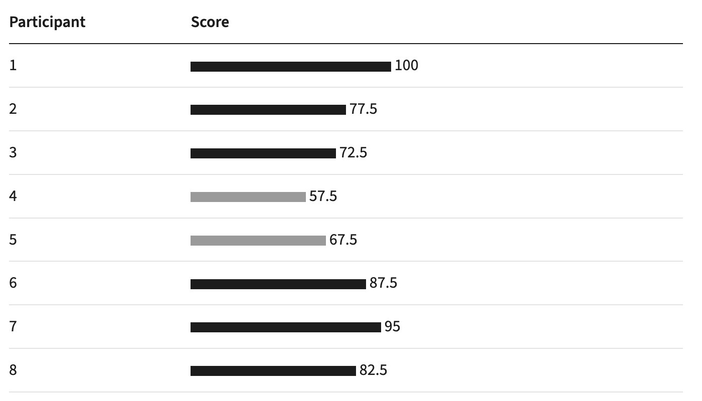

How and why do college students use ChatGPT’s image-generation features across academic, personal, and creative contexts?
Back to selected work
UX research
How college students use ChatGPT to make images, and where it stops working for them
A team study of ChatGPT image generation and editing, using interviews, a think-aloud test and the System Usability Scale.
- My role
- Interviewer, coder, SUS analysis
- Team
- Ying Zhong, Raffa Mirella Gano, Titilope Kate Afolabi
- Course
- INFO-H543 · Indiana University
- Timeline
- August–October 2026
- Methods
- Interviews, affinity mapping, think-aloud, SUS
- Tools
- Figma board, Qualtrics, Excel, recordings and notes
The system and why we picked it
We started with ChatGPT as the product and asked how people actually use it. Our early notes were broad: how people consume the product, how college students use it for work and for personal things, how they use it to help with assignments, and one specific idea, how people upload an image. Image generation kept coming up as the part we knew least about, so we narrowed the study to that.
ChatGPT can create or edit images from a text prompt. You can upload a photo, a sketch or a document and ask for a new object, a different style, a cleaner diagram, or a file type like SVG. If the result is off, you keep chatting until it is better, or you rate it with a thumbs up or down.
Most students we talked to already use ChatGPT daily for classes, so image generation was often one more thing to try in a tool that was already open. One said it’s convenient because “it’s just there.” We wanted to know what they make with it and whether it gives them the image they had in mind.
Research questions
What helps or prevents college students from turning their ideas into satisfactory images through ChatGPT?
The usability tests checked whether perceived usability beat a SUS score of 70, and where the editing experience broke.
Methods
We recruited college students aged 18 or older who had used ChatGPT to generate or edit an image at least once. The image didn’t have to be for coursework. Everyone gave consent first and was asked not to share private information.
8
Interviews
7 female, 1 male · Ages 24–30
15 to 20 minute semi-structured interviews, in person or online. Coded the answers and grouped codes on an affinity map.
8
Think-aloud tests
Ages 21–34 · CS, HCI, data science, architecture
Three editing tasks on one illustration. Participants thought aloud and could edit until satisfied.
8
SUS responses
10-item questionnaire
Two of the same tasks, then the SUS in Qualtrics. T-test against 70 and a 90% confidence interval.
My role
- Ran two interviews: one in person (notes only) and one online (recorded).
- Coded my two transcripts first (14 codes) before merging codes as a team.
- Scored SUS responses for P03 and P04, then helped with the full eight-person analysis.
- Worked on the data, performance-metrics and self-reported-metrics reports and the affinity map. We divided the work equally.
The tasks
Every participant started from Image A: a girl wearing a VR headset and holding controllers, and a boy with no headset, waving.
Scenario. You are making a poster for the virtual reality gaming club. You decide to use ChatGPT to edit this image for your poster.

Task 1
Edit the image so the boy participates in the same VR experience as the girl. Keep the style and make the minimum necessary changes. Make as many edits as needed.
Task 2
Show both people using VR together, but the girl enjoys the experience while the boy does not. Keep the original style and change as little as necessary.
Task 3
Match a new visual style while preserving the main content, interaction, characters and VR elements.

What we recorded in each session
Task success, time, prompts and iterations, whether participants stayed in the same chat, rephrased, saw unexpected output or unwanted changes, felt frustration or satisfaction, or needed help. We rated tasks as no problem, minor problem, major problem, or failure/gave up. We also tagged prompt interpretation mismatch, unintended modifications, lost instructions, difficulty with localized editing, and image generation limits.
What we found in the interviews
Who uses it and for what
Academic, personal and creative uses all showed up. A PhD student asked for editable SVG diagrams of a research pipeline. A data science master’s student turned a hand sketch into a poster graphic. Others previewed how they would look in glasses, redesigned a bedroom, removed people from photos, made a LinkedIn headshot, or built coloring sheets for a preschool class.
People picked ChatGPT because they already knew it, it was free and it was fast. Four participants said Gemini made better-looking images, and some used both to compare. Almost everyone treated the result as a starting point.
“Using it to get 80 percent of the visual work done quickly is a huge time-saver for students. You just have to be ready to do a bit of editing yourself at the end.”
What helps
Uploading a photo, sketch or reference document. Writing detailed prompts that name layout, style and file type. Rating results with a reason. Restarting in a new chat with all the instructions merged into one. Finishing the last bit by hand in a tool like Canva.
What gets in the way
Unrequested changes were the big one: faces and hairstyles changed, text came out scrambled, and earlier instructions got lost in long chats. Some outputs looked AI-generated. One participant stopped after two or three corrections; another gave up at about five when results stopped improving.
“From the text, it shows that it can understand what you want, but from the images, it cannot.”
Participants said they would not use it for professional headshots, exact charts, or precise labels. One avoided it because of environmental concerns and a feeling that it takes creating away from people.
The affinity map
We coded all eight interviews (24 codes) and grouped them into seven clusters. Three themes came out of it: AI for efficiency and idea generation, the need to keep refining AI output, and the importance of accuracy, quality and control.

User personas
From the interviews we built four personas. They share one need: help that keeps them in control of the result.
Lily Ng · PhD, computer science. Cares that research visuals are accurate and detailed; has little patience for many rounds of refining.
Amy Vaugn · Master’s student. Uses AI daily; is bothered by changed faces, misspelled labels and manual editing.
Irene Simpson · 4th-year BA philanthropy. Is wary of depending on AI and wants her work to reflect her own ideas.
Cristina Law · 2nd-year HCI PhD. Likes AI for fast ideas, but not as her final design; gets frustrated when one small change alters the rest.


Think-aloud usability test
Eight participants completed three editing tasks while talking through what they were doing and expecting.
Task results
| Task | Direct success | Extra prompting |
|---|---|---|
| Boy joins VR | 7 of 8 | 1 (missing controller) |
| Boy unhappy, girl happy | 6 of 8 | 2 (one boy without a headset) |
| Restyle | 7 of 8 | 1 (three prompts, hairstyle changed) |
Nobody failed. All 24 attempts ended with an image the participant accepted (95% confidence interval for completion: 87.95% to 100%). With only eight people, the interval is still wide.
Issues we saw while they thought aloud
- Output didn’t match the request3 of 8
- Unintended changes while editing2 of 8
- Login difficulties2 of 8
- Unsure if the chat remembered earlier context1 of 8
The unintended changes included VR glasses added to the boy and a changed hairstyle and hair color on the girl. One participant switched to the phone app after a desktop login problem. Another retyped everything because they weren’t sure ChatGPT remembered it.
SUS survey
Mean score 80.0
After Tasks 1 and 2, each participant completed the 10-item SUS in Qualtrics.
The usual SUS average is 68. Two people scored under 70.
- SD
- 14.21
- One-tailed t-test vs. 70
- t(7) = 1.99 · p = .043
- 90% confidence interval
- 70.48–89.52
The lower bound is barely above 70. SUS doesn’t say why, so I read it next to the think-aloud notes.

Putting the usability results together
People rate it as easy and they can finish the tasks. The trouble starts when a result is close but not right. Fixing one detail without breaking the others is hard, and that is where students get annoyed and go finish the job themselves.
Reflection
What I would change in the design
- Follow instructions and keep context. Do what the prompt says, remember earlier instructions, and show whether past context is being used.
- Protect details. Text, skin tone, lighting and facial features should be treated as constraints, not suggestions.
- Edit a region. Let people select an area, describe a change, and keep everything else, the way Photoshop mixes selection with text.
Challenges and what I’d do differently
Our sample is small and mostly female graduate students, so I would not generalize it to all students. Some interviews were written notes, not recordings, so quotes there are less exact. The SUS study used two tasks while the think-aloud used three, which made them harder to compare.
Next time I’d record every session, use the same tasks in both tests and recruit undergraduates on purpose.
Next steps
Test precise edits, keeping elements the same, and use of earlier context, with a larger and more varied group.
Quotes are lightly edited for readability and participants are not named. Thanks to Ying, Raffa and Titi for the teamwork.